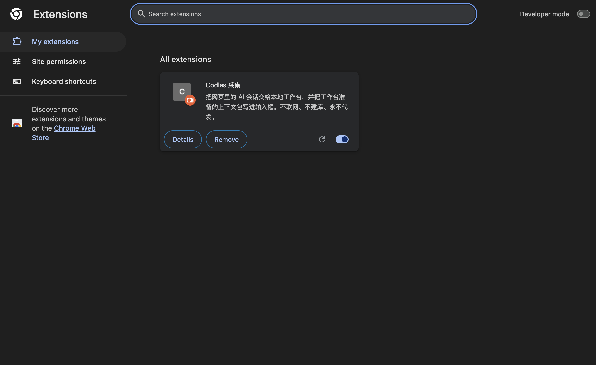
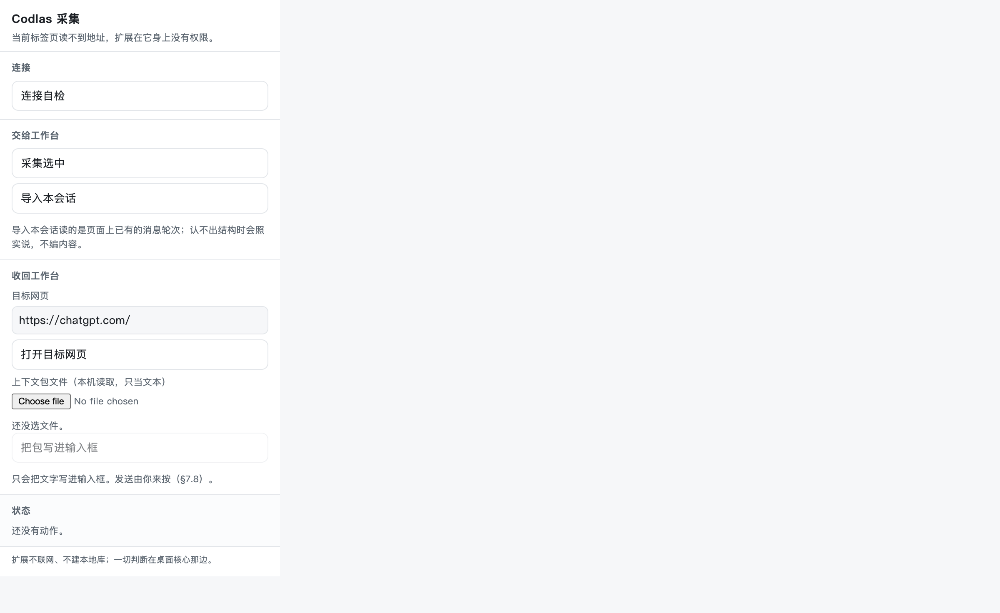
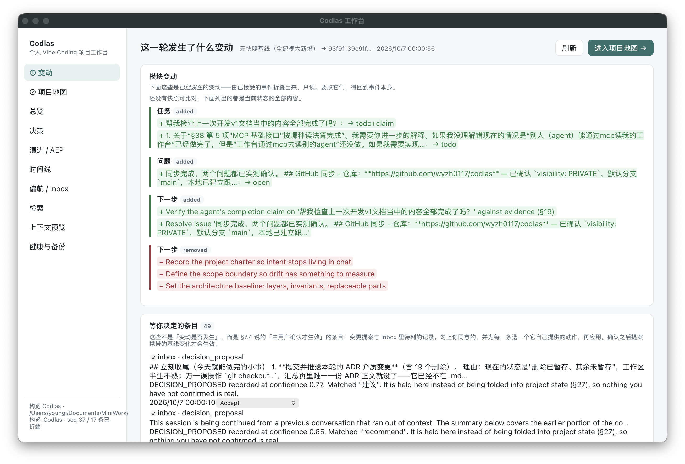
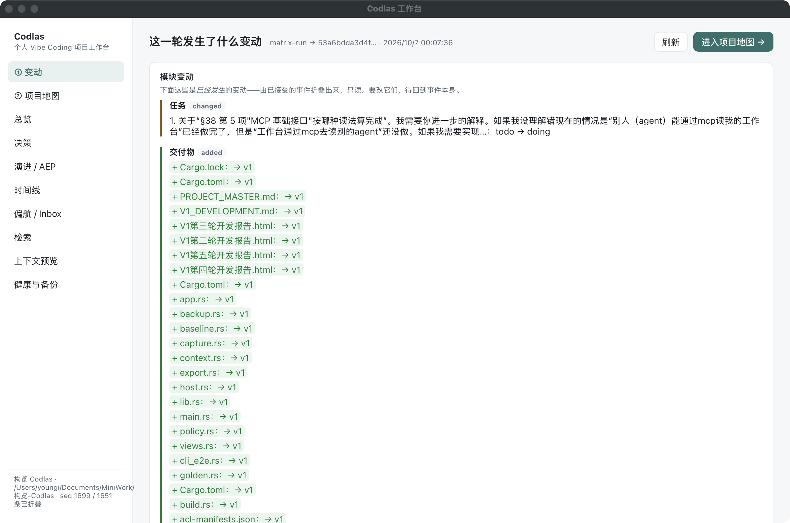

V1 第六轮开发报告 · 预想功能对表：真 Chrome、真会话、真桌面
2026-10-07 · 本轮不新增 V1 之外的概念。做的是用户点名的四件事：把扩展装进真浏览器、 拿真会话喂进链路、把桌面拉起来、把"最初预想的功能"逐条跑一遍并左右对表。 过程中修出两个会吃证据的缺陷（ADR-034 / ADR-035），其余全部结论以真机跑出的数字作数。
一、本轮要回答的四件事
| 用户的原话 | 本轮交付 | 结果 |
|---|---|---|
| chrome 上安装本扩展 | apps/extension（MV3 + nativeMessaging）装进 Chrome for Testing 151，
扩展 id okeehdlhbkmkpoplmciiblmoejkfaieb；native host wp host serve 握手成功 |
✅ 装入并双向通 |
| agent 侧对话可用本项目开发记录来测 | 本项目 CLI 会话（26 MB JSONL）经 wp import cli-session 导入：
215/215 轮（35 user + 180 assistant）进链路，产出 215 messages / 51 events / 47 pending |
✅ 真材料闭环 |
| 桌面端帮我拉起一下 | Tauri 窗口 1240×820 拉起并用截图核对；随后对活动库重启， 读到 CLI 刚写入的境界（seq 1699） | ✅ 两面同库 |
| 预想功能逐条测试并左右对表 | 29 节能力矩阵在真库上跑完（下文对照表）； 三块界面与安全边界一并核对 | ✅ 见第二章 |
二、预想 vs 执行对照表（本轮核心交付）
左列是开发最初写在 Charter / V1 文档里的预想（原文口径），右列是本轮在真库里实际跑出的执行情况。 标记含义：✅ 成功（本轮真跑通，数字为证）· ◐ 条件成功（功能在，但有一次是"用错门"或依赖人的前置）· ⏸ 留给人的屏幕（代码不在场证明：需要真人/真账号操作才能核）。
A · Charter 五条 Must-have（用户锁定的原文）
| 开发最初的预想 | 本轮执行情况（真库数字） | 结果 |
|---|---|---|
| event-first 的项目记录 | 库到 seq 1699：1649 events 折叠出 1628 artifacts / 3 tasks / 1 issue；
事件词汇表 42 种（crates/domain/src/event_catalog.rs）；
手工补事件 TASK_STARTED → seq 1696→1697 立即进折叠 |
✅ |
| charter 与 scope 的用户锁定 | charter v1 locked:true、history 只有 v1；非用户写入被 CoreError::Locked 挡；
scope 里 allowCloudModel=false 实测把云端目标拒了 3 次（§53） |
✅ |
| 自动编译的 PROJECT_MAP | wp map show / save 编出 6687 B markdown，带 sourceStateHash；
与桌面标题栏、MCP 输出三面同 hash |
✅ |
| 偏航提示与 inbox | drift check 从真会话里认出 3 条 feature_creep（info 级，只提示）；
inbox 五类队列在列；inbox resolve --kind drift --action dismiss 实测 3→2（seq 1699） |
✅ |
| 按问题动态编译的 context pack | 先拒：云目标被 policy 拒 ×3（refuse_cloud_target 留审计行）；
flip 后放行：42 items / 1560 tok，charter 排最前，审计 redacted 1629；
context prepare 走 adapter fallback() 契约 |
✅ |
B · V1 能力面（29 节矩阵，逐条跑过）
| 开发最初的预想 | 本轮执行情况 | 结果 |
|---|---|---|
| 状态与审阅 | ||
| state summary 一圈可读 | 开跑时 seq 37 · 17 events · 2 tasks · 1 issue；收尾 seq 1697 · 1649 events · 1628 artifacts |
✅ |
| review 列表与人工接受 | pending 6 条（置信度 0.82–0.86）；接受 0e39e10f… 后
seq 37→66、tasks 2→3——接受确实是人的动作，且立即进折叠 |
✅ |
| timeline 带 seq / actor / status | 输出 seq 66 / 37 / 36 / 29 / 28 / 13，agent 与 user 两种 actor、accepted 状态俱全 | ✅ |
| 地图与快照 | ||
| PROJECT_MAP 自动编译 | 15 个小节（Intent/Phase/Scope/Decisions/Drift…）自状态折叠而成，6687 B | ✅ |
| snapshot + diff | 空库先报 no snapshots；take matrix-run @ seq 66；
再 diff → "Since Last Snapshot"（基线相同即 nothing recorded，不装样子） |
✅ |
| 守卫与检索 | ||
| drift 检查 | 3 条 feature_creep info，来源是真会话导入的任务标题——真材料真的走到了规则层 |
✅ |
| inbox 五类与处置动作 | driftalert×3 + decisionproposal×2，每行带 [Keep Boundary / Create Change Proposal / Dismiss]；
resolve --kind drift 处置成功 |
✅ |
| search 三层检索 | "回写总控" 命中 message（0.850，structured 层）；reindex 后 296 records 入索引 |
✅ |
| L3 近似重复只提示不删 | thread 0b2a… 三组 1.000 近似对（同文不同 message），两侧俱在——提示层从不删证据（ADR-024） |
✅ |
| evidence 可回溯 | message 行指向其来源 message 行，kind:id 可点读（§17/§45） |
✅ |
| Context Engine 与安全 | ||
| 按问题编译 + policy 先过滤 | plan / build / prepare 三个动词先在 allowCloudModel=false 下全部被拒（审计有行）；
flip 后放行 42 items / 1560 tok |
✅ |
| policy 五开关可查可改 | policy show local-only / allow-cloud-model / never-send-files / never-send-raw-conversation / redact-secrets 全在列；
check 一句话说清拒因；flip 后原样翻回 |
✅ |
| secret 只进引用不进明文 | put/list/get/rm 全通，值落 local:83244d5e…，SQLite 只存 secret_ref（§53） |
✅ |
| audit 审计行 | refuse 行 ×3 + build_context_pack read 1672 → context_pack:8903b4f8… redacted 1629——
连"读了多少、动了谁、脱敏了几条"都有账 |
✅ |
| 出包、备份与采集 | ||
| export map / pack | map 6687 B；.projectpack 103491 B / 7 members（zip 且自述是投影，ADR-019） |
✅ |
| backup status / create / verify | status: schema v4 / integrity ok；create 出 69 events / 3152 KiB / schema v4；verify 复检 ok（ADR-023） |
✅ |
| adapter health 四态 | transcript failed（编码诊断行号俱全）+ generic-cli ok + qoder ok。
真相：那次 failed 是用错门——真会话走 import cli-session 才通；
门没错，探针摸错了门 |
◐ |
| sources 来源台账 | 4 条（generic_cli ×2 / chatgpt_web ×2），含扩展自检来源 sw-selfcheck-2026-10-06 |
✅ |
| watch 文件与 git 信号 | demo 目录 1628 files read → 1628 changed → 1628 events（首遍为基线，全部按 changed 记账）； git 侧先报 branch main / 3 uncommitted（§39 / ADR-022） | ✅ |
| 手工事件与词汇表 | 小写 task_added 被拒（error 直接指明）；大写 TASK_STARTED 通过 → seq 1697。
词汇表在 event_catalog.rs，42 种全大写——这是文档没写死、由目录定义的一课 |
✅ |
C · 三块界面（同一实现的三个门）
| 开发最初的预想 | 本轮执行情况 | 结果 |
|---|---|---|
| 桌面壳：diff 优先，先看变动再决定生效 | 窗口 1240×820 拉起（截图在案）；首屏 49 pending 待判；对活动库重启后读
seq 1699 / 1651 folded / todo→doing / 1628 artifact diffs；
CLI、桌面、MCP 三面 State hash 逐字节相同：
53a6bdda…f8293e78e |
✅（冷启动 ~30–40s，见第七章观察） |
| 浏览器扩展：Chrome 里装，native 双通道 | CfT 151 装入，id okeehdlhbkmkpoplmciiblmoejkfaieb；
hello 收回 379 B capabilities；capture 真落 2 条消息
（source sw-selfcheck-2026-10-06）；
popup 气泡 headless 不可渲染、真页面采集需真人登录——见第七章 |
◐ 通道通，真页待人 |
| MCP 读面：agent 从外面读工作台 | wp-mcp stdio JSON-RPC：initialize ok（协议 2024-11-05）；
6 工具全在；project_state 1426406 B，tasks 3 / issues 1 / artifacts 1628 = CLI 同数；
project_map 的 hash = 桌面显示的那个；context_pack 23 items；search 命中 5 条 |
✅ 出向齐 |
| MCP 入向（工作台去读 agent 会话） | 未建：触发条件与届时形状记在 ADR-028—— 这是 V1 目前唯一还欠的代码项 | ⏸ 按决定欠着 |
D · 安全与边界（对表：预想的行为 vs 实测）
| 预想边界 | 本轮实测 | 结果 |
|---|---|---|
| §7.8 发送永远是人的动作 | 扩展只做题写（fill）与采集（capture），open/inject 答的是指令不是动作（ADR-031） |
✅ |
| §53 Keychain / secret_ref，明文不进 SQLite | 实测存读删走 local:… 引用；SQLite 内无明文值 |
✅ |
| 禁止 4：永远只有一个 Project State | CLI / 桌面 / MCP 三面同 hash——不是"声称一致"，是同一次折叠的三个读法 | ✅ |
| 禁止 5 / 8：Charter 不可被模型改写、未触发不预实现 | charter 锁 v1 实测；入站 MCP、语义检索等按 ADR-016 / AEP 挂着，没有偷偷建 | ✅ |
三、真 Chrome 与 TCC：一条静默卡死的根因（ADR-035）
扩展装入后第一次跑 native host，Chrome 侧永远等不到回答——进程没报错、没日志、
连一行 stderr 都没有。用 sample 抓了 Chrome 拉起的那个进程，样本 100% 停在
dyld 的 open()：macOS TCC 在 main() 之前就把
~/Documents 下的二进制拦下了，Chrome 拉起的进程连第一行代码都没跑到。
- 根因不是权限没给，是位置：native host 二进制不该住在
~/Documents | Desktop | Downloads——TCC 的守卫目录按路径拦进程，不问签名； - 修法：宿主装到守卫目录之外（本轮移到
~/codlas-demo/host/bin/），一次即通； - 补防：
wp host manifest现在会检测并警告（guarded_folder()）， 测试guarded_folders_are_recognised_by_path_component_not_text_prefix把"按路径分量识别、 不按文本前缀"钉死（否则~/Documents-archive这类会误伤）； - 决定全文：ADR-035—— 只警告不拒绝，因为正确位置因机器而异，且拒绝会把"能用但不在推荐位置"的合法安装也打死。


四、真会话进链路：normalizer 会吞掉对话（ADR-034）
拿本项目自己的 CLI 会话（26 MB JSONL，215 轮）做真材料。第一遍导入只进来 22/215 轮——
少的不是边角，是所有 assistant 的回答。查下去是 normalizer 把消息里的
content 块当成了一段平文：thinking、tool_use、tool_result、
image 这些机器块被拍平进"发言"，而真正的 type:"text" 块反而被吞。
| 修复前 / 后 | 数字 |
|---|---|
| 修复前 | 22 / 215 轮（丢弃全部助手文本） |
| 修复后 | 215 / 215 轮（35 user + 180 assistant），导入 215 messages / 51 events / 47 pending |
| 幂等复检 | 第二遍导入 0 新增（drain 身份而非时间戳，§51） |
| 事件闭环 | 接受其中一条 claim → seq 37→66，tasks 2→3 |
| 新增测试 | crates/ingestion/tests/normalizer.rs ×2：
jsonl_reads_text_blocks_and_skips_thinking_and_tool_blocks /
a_block_without_a_type_but_with_text_is_still_text |
type:"text"，
thinking / tool_use / tool_result / image 一律跳过、绝不拍平；无 type 但有 text 的块仍算文本。
五、桌面：同库的两面，同一次折叠
Tauri 2 壳只做展示（ADR-029），本轮实拉两台窗口状态：


三面同 hash 是本轮"禁止 4"最硬的一条证明：桌面不是第二套逻辑， 它读的就是 CLI 刚写进的那一份。冷启动在海量事件（1651）下约 30–40 秒，详见第七章。
六、MCP：出向六工具已在真库上点过名
initialize → protocolVersion 2024-11-05, serverInfo codlas-workbench 0.1.0 tools/list → project_state, project_map, project_timeline, search, open_evidence, context_pack project_state → 1426406 bytes, tasks 3 / issues 1 / artifacts 1628（= CLI 同数，同端口） project_map → 5415 bytes markdown, sourceStateHash 53a6bdda…（= 桌面标题栏） context_pack → 23 items, charter 在最前, 本地目标不触发拒 search "同步" → 5 hits（issue + messages，跨层） stderr → serving …/workbench.db over stdio / stdin closed after 6 answers
证据留档：docs/assets/v1-round6-mcp.txt（压缩版；原始 1.5 MB 响应不进仓库）。 入向采集仍欠，名字不变：ADR-028。
七、测试与账目
测试总数
通过 / 失败 / 忽略，零 warning
本轮新增
normalizer ×2（ADR-034）+ host 守卫 ×1（ADR-035）
ADR 总页数
新增 ADR-034 / ADR-035，序号从 036 起
矩阵
真库 seq 37 → 1699 全程
账目规则沿用上一轮：写进文档的每个数字必须来自最后一次改文件之后跑出的那一遍，
且测试的声称以测试体为准、不以测试名。本轮 303 是 2026-10-07 00:0x 的完整跑（全仓 cargo test）计数。
八、仍然要人的三处（诚实清单）
| 项 | 为什么本机做不了 | 留给谁 |
|---|---|---|
| 扩展 popup 的气泡状态 | headless 截图管线不渲染扩展气泡，只能验证到 popup 页本体 | 真人在自己 Chrome 里点一下扩展图标 |
| 真网页采集（如 ChatGPT 页内） | 需要真人登录态；本项目只验证了 capture 通道与自检来源 |
用户用自己的 Chrome 配置登录后采一次 |
| 桌面冷启动观感 | 1651 事件下首屏约 30–40 秒（第一次截图还是"正在装载"）， 属观察值：§59 预算覆盖的是 CLI 链路，桌面首屏尚无预算断言 | 是否给桌面首屏立预算，V2 再议（AEP 材料） |
九、怎么跑（本轮全部结论的复现路径）
export PATH="$HOME/.cargo/bin:$PATH" # 扩展（真 Chrome） ./target/debug/wp host serve --db ~/codlas-demo/workbench.db # native host # Chrome for Testing 151 → chrome://extensions → 载入 apps/extension → 握手 hello → capture # 真会话导入（幂等，可重复跑） ./target/debug/wp import cli-session <会话.jsonl> --db ~/codlas-demo/workbench.db # 桌面 ./target/debug/wp-desktop --db ~/codlas-demo/workbench.db # MCP ./target/debug/wp-mcp --db ~/codlas-demo/workbench.db --project f379cea720ef494cad7f2995a565c1bb # 矩阵与测试 # 29 节矩阵全文：docs/assets/v1-round6-matrix.log cargo test
十、回写材料与证据（报告所引，皆在本仓库）
回写的文档
- PROJECT_MASTER.md —— §20 四个块（CURRENT DEVELOPMENT STATE / LAST COMPLETED / CURRENT BLOCKER / NEXT IMMEDIATE TARGET）与 §26 V1-D、V1-E 两行（第六轮条目）
- V1_DEVELOPMENT.md —— §26 执行指令的 Stage 清单口径
- docs/RECORDS.md —— 第六轮完整叙事（八个分节：真 Chrome / TCC / 真会话 / 桌面 / 矩阵 / 测试 / 三处人的屏幕 / ADR-028）
- docs/adr/ADR-总览.html —— 27 条决定；本轮新增 ADR-034（normalizer 只读 text 块）与 ADR-035（宿主位置与 TCC）
- docs/adr/README.md —— ADR 索引与新增做法（下一条从 ADR-036 起）
证据（截图与日志）
- docs/assets/v1-round6-extensions.png —— 扩展在真 Chrome 中启用
- docs/assets/v1-round6-popup.png —— 扩展 popup 本体
- docs/assets/v1-round6-desktop-launch.png —— 桌面启动首屏（49 pending）
- docs/assets/v1-round6-desktop.png —— 桌面重启读到 seq 1699，hash 三面相同
- docs/assets/v1-round6-matrix.log —— 29 节矩阵完整日志与两条收尾（26–29 节）
- docs/assets/v1-round6-mcp.txt —— MCP 六工具点名的压缩留档